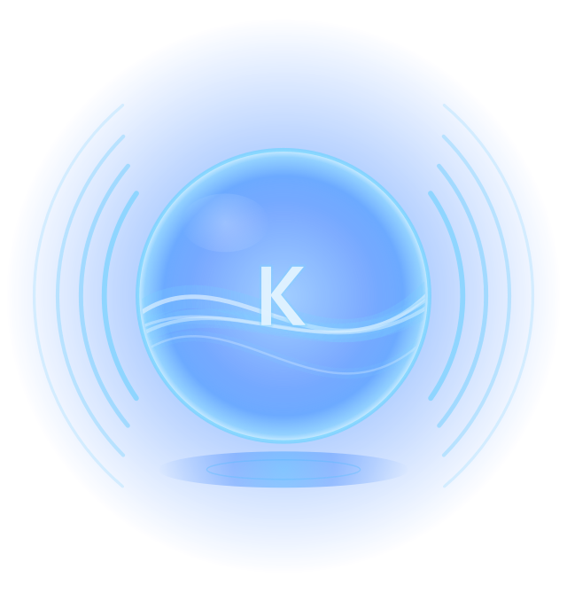
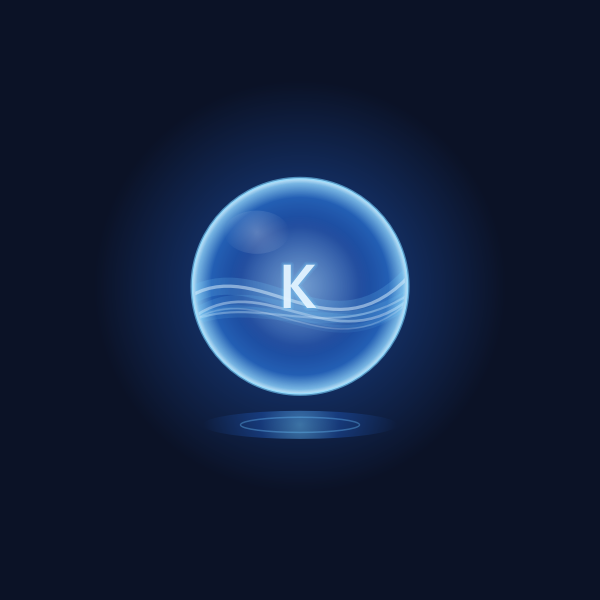
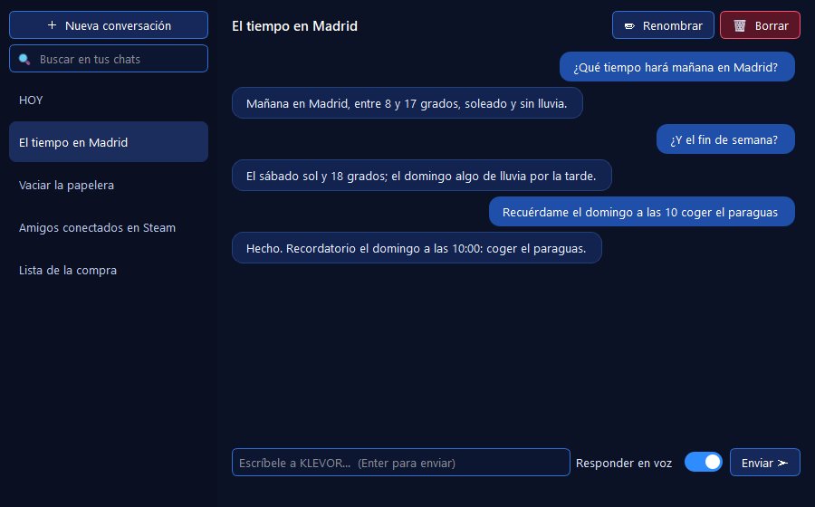
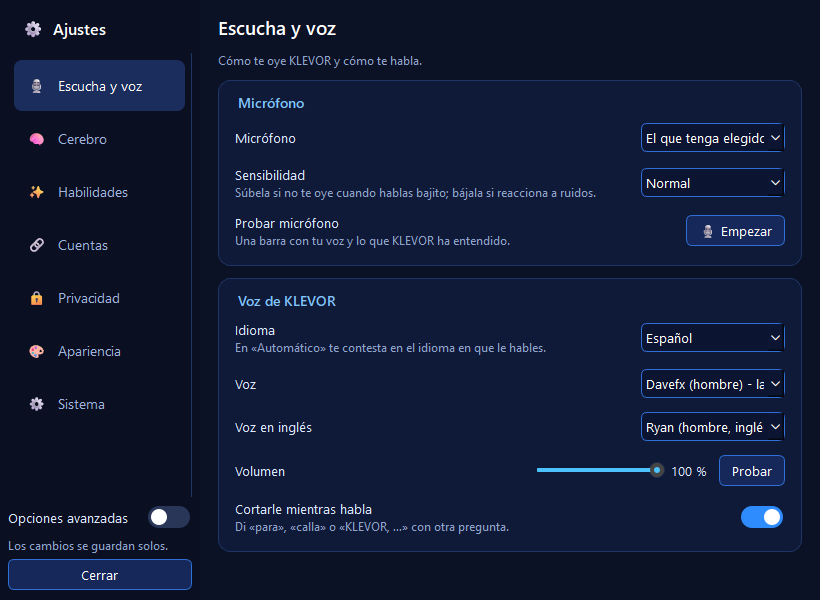
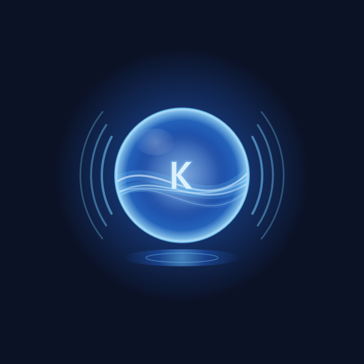
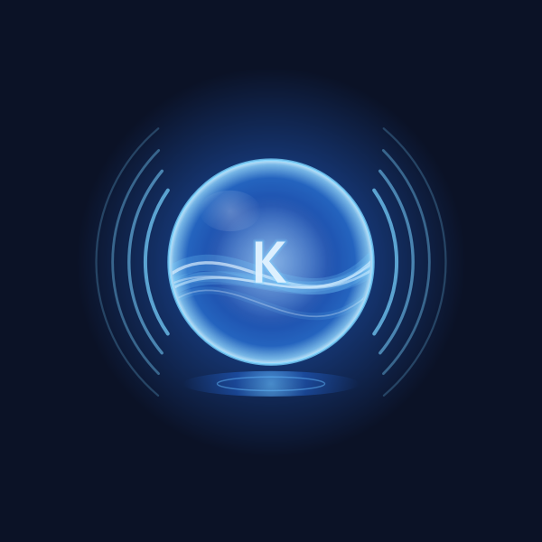

Tu asistente de voz que vive en tu PC
Habla con KLEVOR como hablarías con una persona. Te contesta en voz alta, hace cosas en tu ordenador, te avisa de lo que tengas pendiente y busca información por ti.

Di «Oye KLEVOR» y pídele lo que necesites. Si no puedes hablar en voz alta, también puedes escribirle.
Busca archivos, libera espacio, abre programas y páginas web, sube el volumen, pone música o hace capturas. Antes de cambiar nada, te pregunta.
Recordatorios, alarmas, temporizadores, notas y listas («añade leche a la lista de la compra»). Y un «buenos días» con el tiempo, tus avisos y las noticias.
El tiempo, noticias, Wikipedia, cambio de moneda y la hora en cualquier ciudad. Si preguntas algo reciente, lo busca antes de contestar.
Te dice qué amigos están conectados en Steam y Discord, abre tus juegos y te avisa de las ofertas.
«Recuerda que mi equipo es el Madrid»: lo tendrá en cuenta siempre. Y guarda tus chats como ChatGPT, con un título para cada uno.
Habla con una voz muy natural, sin internet. Y si le hablas en inglés, te contesta en inglés.
«¿Tengo correos nuevos?», «léeme el último de Amazon». Conecta tu Gmail en Ajustes: KLEVOR solo lee, nunca envía ni borra, y el permiso se queda en tu PC.
«¿Qué tengo mañana?», «apunta dentista el martes a las 5». Conecta tu Google Calendar en Ajustes: ve tus citas y apunta las nuevas, siempre preguntando antes.
«¿Qué pone en este error?»: hace una captura, la entiende y te lo explica. Solo cuando se lo pides, sin guardarla y sin que salga de tu PC (se activa en Ajustes).
KLEVOR lleva su propia inteligencia artificial dentro.

Una esfera flotante que se mueve cuando te escucha, piensa o habla. Si estás jugando, puede aparecer solo cuando la llamas, o no aparecer nunca y que solo la oigas.




Lo que necesitas:
🧪 Es una versión beta: puede tener fallos. Si encuentras alguno, cuéntamelo y lo arreglo.
⬇ Descargar KLEVORUn solo archivo de unos 128 MB. Gratis y sin registrarte. Después se actualiza solo.
Lo que dicen nuestros usuarios. Opiniones reales de personas con cuenta de Google.
Lo hago yo solo, en mi tiempo libre, y siempre será gratis. Si te gusta y quieres que siga mejorando, puedes invitarme a un café. Cualquier ayuda me anima muchísimo.
«KLEVOR es un proyecto independiente en constante desarrollo. Tu aportación voluntaria ayudará a financiar herramientas de inteligencia artificial, mejores servicios y recursos para acelerar su evolución».
☕ Donar con PayPalQue KLEVOR ya funciona y se puede usar cada día, pero todavía está en pruebas: puede equivocarse, tener algún fallo o cambiar de una versión a otra. Las versiones nuevas irán arreglando lo que salga.
Sí. Sin anuncios, sin suscripciones y sin cuentas.
Escucha solo para saber si dices «Oye KLEVOR». Lo que dices sin llamarle se descarta al momento: no se guarda ni se envía a ningún sitio. Puedes apagar el micrófono cuando quieras.
Solo si se lo pides, y siempre te pregunta antes. Lo que borra va a la papelera, así que se puede recuperar. Nunca toca Windows ni los programas instalados.
Para hablar con él, no. Solo para lo que es de internet: el tiempo, las noticias, Wikipedia…
De momento solo en Windows.
En Ajustes → Escucha y voz → «Probar micrófono» verás si te llega la voz. Prueba otro micrófono o sube la sensibilidad.